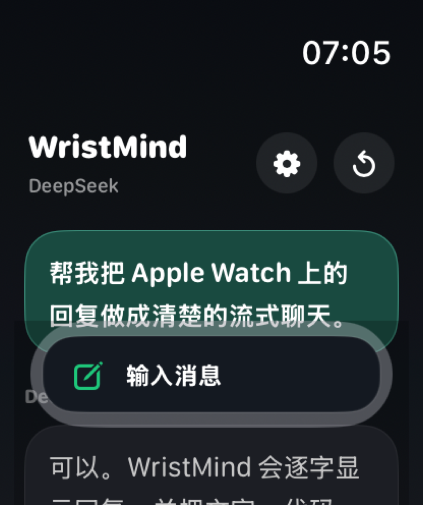
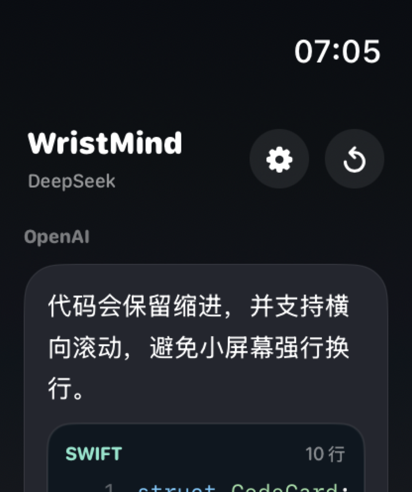
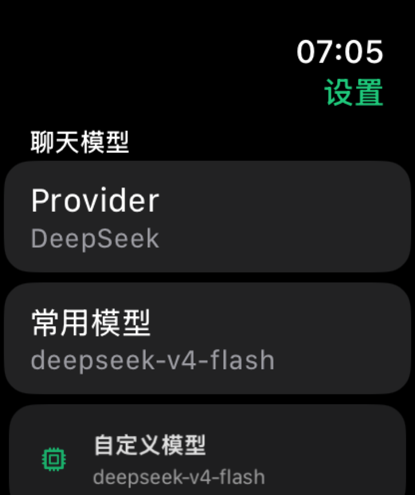

Hook
What happens when an AI assistant has to answer inside a watch-sized interface instead of a laptop chat window?
Maker Content Case Study
A maker-facing AI prototype that can become a short demo, workshop recap, setup guide, and visual story about designing for tiny screens.
What happens when an AI assistant has to answer inside a watch-sized interface instead of a laptop chat window?
Students who want to understand AI APIs, interface constraints, secure key setup, and how to document prototypes clearly.
Short reel, screenshot carousel, workshop handout, model-setting explainer, and a behind-the-scenes post about testing image/code output.




Capture
The project has clear visual beats: setup, chat, code, image card, and zoomed detail. That makes it easy to turn into a reel or carousel.
Explain
It gives me a concrete way to explain model providers, API keys, streaming, and multimodal output without making the content abstract.
Document
I can write a student-friendly tutorial that covers decisions, tradeoffs, and troubleshooting rather than just showing the final UI.
Prototype
Because I built and tested the prototype myself, I can document it from both the maker perspective and the audience perspective.
GitHub
The public repository gives viewers a concrete source-code reference for the watchOS prototype, including the UI, provider settings, streaming responses, image viewer, and project documentation.